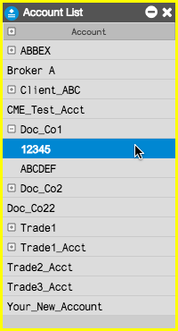
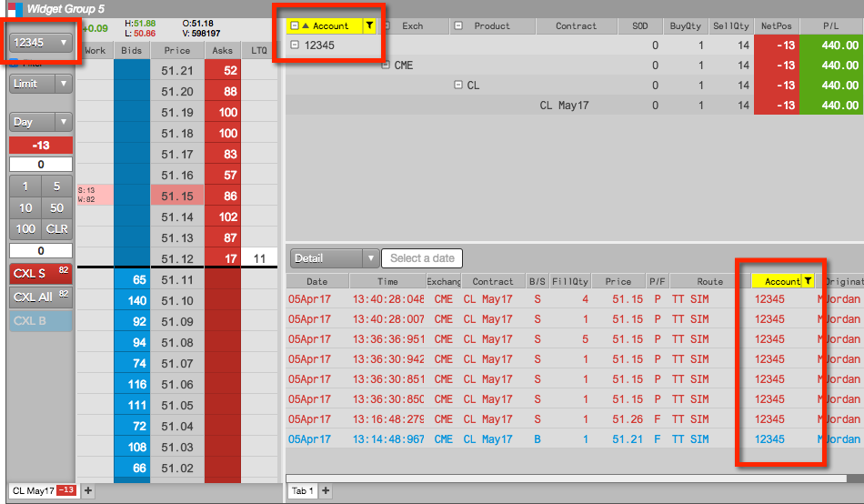
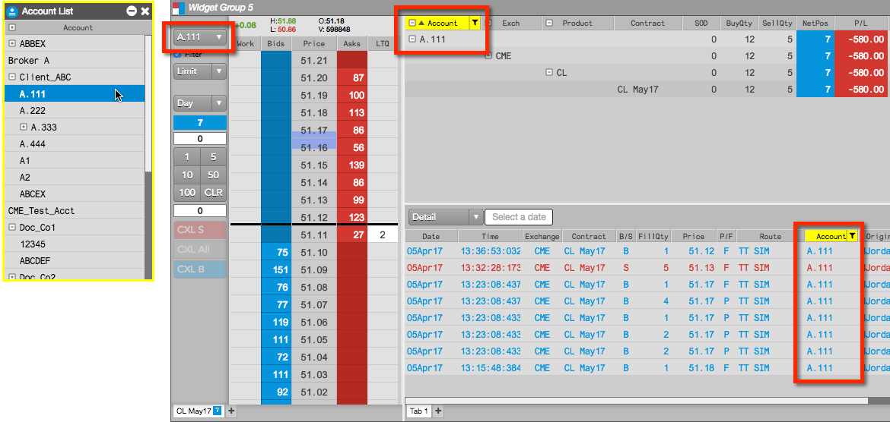
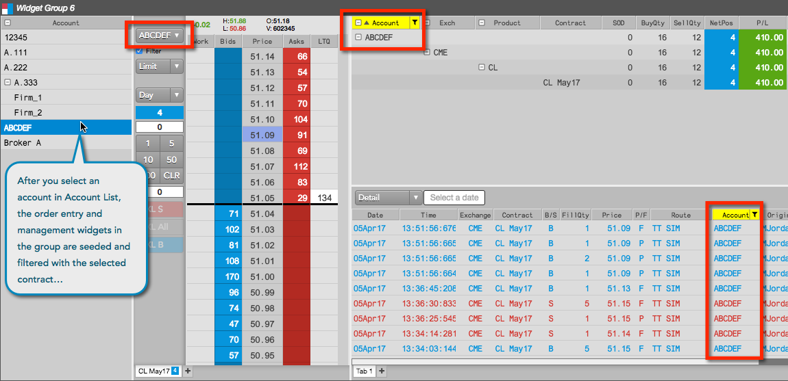

To use the Account List:

Any opened order entry widgets (e.g., MD Trader) are seeded with the selected account. Any opened order management widgets (e.g., Positions, Audit Trail, etc.) are filtered with the selected account.


When you create a widget group that includes the Account List widget, you can use the list to seed the account field in order entry widgets and filter the Accounts column in order management widgets in the group.
